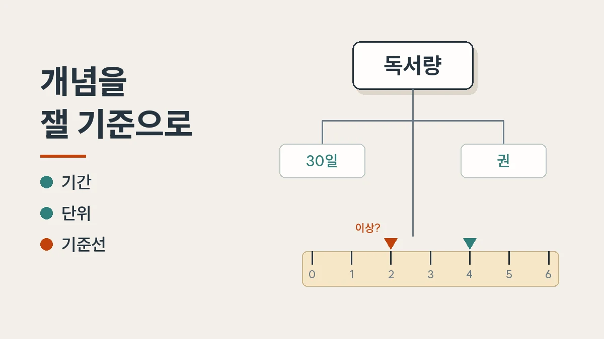

‘집중력’은 무엇으로 잴까? 탐구 개념을 측정 기준으로 정의하는 법
탐구 질문 속 ‘집중력’, ‘많이’ 같은 낱말을 관찰하고 셀 수 있는 기준으로 바꾸는 법을 다룹니다. 가상 독서 설문으로 기준선에 따라 결론이 달라지는 모습, 수정 전후 문장, 다섯 가지 점검 질문과 개념 정의 카드를 안내합니다.

탐구 질문을 “스마트폰 사용이 집중력에 영향을 줄까?”나 “우리 반 학생들은 독서를 많이 할까?”로 정하고 나면 바로 설문지를 만들고 싶어집니다. 그런데 결과를 정리하다 보면 막히는 곳이 생깁니다. 집중력은 무엇으로 쟀는지, 몇 권부터 ‘많이’인지 보고서 어디에도 적혀 있지 않기 때문입니다. 질문에 들어간 낱말을 측정할 기준으로 바꾸지 않으면, 같은 자료를 보고도 읽는 사람마다 다른 결론을 냅니다.
이번 칼럼은 탐구 질문의 핵심 개념을 관찰하거나 셀 수 있는 기준으로 정의하는 방법을 다룹니다. 큰 주제를 질문 하나로 좁히는 일은 좁은 질문 칼럼에서, 정한 절차를 방법 문단에 기록하는 일은 방법 문단 칼럼에서 다뤘습니다. 이 글은 그 사이 단계입니다. 질문을 정한 뒤, 자료를 모으기 전에 “이 보고서에서 이 낱말은 무엇을 뜻하고 무엇으로 세는가”를 정합니다. 과제 안내에서 측정 도구나 지표를 지정했다면 그 조건을 먼저 따르세요.
사전의 뜻과 측정 기준은 다릅니다
OpenStax의 사회학 개론 교재는 연구자가 신뢰도와 타당도가 있는 결과를 얻기 위해 조작적 정의(operational definition)를 만든다고 설명합니다. 각 개념이나 변수를 객관적으로 측정하는 데 필요한 구체적 절차로 정의하는 것이고, 이렇게 하면 개념이 관찰할 수 있는 조건으로 드러납니다.[1] 같은 교재는 타당도를 연구가 측정하려던 것을 얼마나 잘 측정하는지로, 신뢰도를 같은 연구를 다시 했을 때 결과가 재현될 가능성으로 설명합니다.[1]
보고서에 옮기면 개념에는 두 가지 뜻이 생깁니다. ‘독서는 책을 읽는 일’처럼 사전이나 교과서에 나오는 뜻이 하나이고, ‘지난 30일 동안 끝까지 읽었다고 응답한 종이책·전자책 권수’처럼 이 보고서에서 실제로 세는 기준이 다른 하나입니다. 서론에는 앞의 뜻을 써도 되지만, 결과와 결론이 기대는 것은 뒤의 기준입니다.
기준이 바뀌면 같은 자료의 결론도 바뀝니다
OpenStax는 과외가 성적을 올리는지 묻는 연구를 예로 듭니다. 한 연구자는 C 이상을 ‘좋은 성적’으로 보고, 다른 연구자는 B+부터 좋은 성적으로 본다면 결과를 서로 재현하기 어렵다는 것입니다. 교재는 이런 정의가 범위와 기준선(cut-off)을 정해 연구의 일관성과 재현 가능성을 확보한다고 설명합니다.[1] 기준선 하나가 결론을 얼마나 바꾸는지는 아래 가상 자료로 바로 확인할 수 있습니다.
아래 자료와 문장은 편집팀이 만든 교육용 가상 예시입니다. 실제 학교나 학급의 조사 결과가 아닙니다. 한 반 20명에게 “지난 30일 동안 끝까지 읽은 책은 몇 권인가요?”라고 물었다고 가정합니다.
- 응답(권): 0, 1, 1, 2, 0, 3, 5, 2, 1, 4, 0, 2, 6, 1, 3, 2, 0, 1, 4, 2
- 합계 40권, 1인당 평균 2권. 0권이라고 답한 학생은 4명(20%)입니다.
- ‘많이 읽는 학생’을 2권 이상으로 정하면 11명, 55%입니다.
- 같은 자료에서 기준을 4권 이상으로 정하면 4명, 20%입니다.
응답은 하나도 바뀌지 않았는데 한 기준으로는 반 이상이 ‘많이 읽는 학생’이고, 다른 기준으로는 다섯 명 중 한 명입니다. 어느 기준이 맞는지는 자료가 알려 주지 않습니다. 탐구 질문과 근거에 따라 학생이 정하고, 그 이유를 보고서에 밝혀야 합니다.
수정 전 · 가상 초안
설문 결과 우리 반 학생들은 대체로 독서를 많이 하는 것으로 나타났다. 독서를 많이 하는 학생이 절반이 넘었다.
이 초안을 읽고는 몇 권부터 ‘많이’인지, 어떤 책을 셌는지, 기간이 언제인지 알 수 없습니다. 독자가 기준을 4권으로 짐작하면 ‘절반이 넘었다’는 문장은 틀린 말이 됩니다.
수정 후 · 가상 자료로 쓴 문장
이 보고서에서는 ‘독서량’을 응답자가 지난 30일 동안 끝까지 읽었다고 답한 책 권수로 정의했다. 종이책과 전자책은 포함했고 웹툰과 교과서는 제외했다. ‘많이 읽는 학생’은 2권 이상으로 정했는데, 이 반의 평균이 2권이어서 평균 이상인 학생을 가리키기 위해서다. 이 기준으로는 20명 중 11명(55%)이 해당했지만, 기준을 4권 이상으로 높이면 4명(20%)으로 줄었다. 따라서 이 결과는 ‘평균 이상 읽은 학생이 절반을 조금 넘었다’는 뜻으로만 해석하며, 학생들이 대체로 독서를 많이 한다고 일반화하지는 않는다.
수정한 문장은 개념의 기준, 포함과 제외, 기준선을 고른 이유, 기준을 바꿨을 때의 결과를 함께 적었습니다. 2권이라는 기준이 반드시 옳다는 뜻은 아닙니다. 다른 기준을 쓴 사람도 이 보고서의 결과를 자기 기준과 비교할 수 있게 된다는 점이 달라졌습니다.
개념 하나를 기준으로 바꾸는 다섯 질문
탐구 질문에서 결과를 좌우하는 낱말에 밑줄을 긋고, 하나씩 아래 질문에 답해 보세요. 보통 질문 하나에 두세 개가 나옵니다. ‘스마트폰 사용’, ‘집중력’, ‘많이’, ‘효과’ 같은 낱말입니다.
- 무엇을 셀 것인가: 관찰하거나 기록할 수 있는 행동, 수량, 응답으로 바꿉니다. ‘집중력’이라면 ‘40분 자습 중 학습과 관계없는 화면을 켠 횟수’처럼 적습니다.
- 단위와 기간은 무엇인가: 횟수인지 분인지 점수인지, 어느 기간의 자료인지 정합니다.
- 무엇을 넣고 무엇을 뺄 것인가: 전자책, 음악 감상용 스마트폰 사용처럼 애매한 경우를 미리 정해 두지 않으면 응답자마다 다르게 답합니다.
- 기준선이 필요한가, 왜 그 값인가: ‘많다’, ‘효과가 있다’처럼 집단을 나누는 말이 있다면 기준선과 그 근거(평균, 공식 통계의 정의, 과제 조건 등)를 적습니다. 근거 없이 정했다면 기준을 바꿔 결과가 어떻게 달라지는지도 확인합니다.
- 이 기준이 놓치는 것은 무엇인가: 타당도를 점검하는 질문입니다. 화면을 켠 횟수는 ‘집중력’ 전체가 아니라 그 일부만 보여 줍니다. 화면을 켜지 않고 딴생각을 한 시간은 잡지 못하고, 스스로 기록하면 빠뜨리는 일도 생깁니다. 이 내용은 숨기지 말고 한계로 적습니다.
공식 통계를 쓸 때도 같은 확인이 필요합니다. 통계표의 항목 이름이 내 질문의 낱말과 같아 보여도 조사 개요에 적힌 정의와 대상이 다를 수 있습니다. 교재도 특정 지역의 자료로 정의한 결과를 다른 지역에 그대로 일반화하기 어렵다고 설명합니다.[1]
정한 기준은 보고서 끝까지 같은 이름으로 씁니다
기준을 정해 놓고 본문에서 이름을 바꾸면 독자는 다른 것을 쟀다고 읽습니다. 방법에서는 ‘화면을 켠 횟수’였는데 결과에서 ‘집중도’, 결론에서 ‘학습 몰입’이라고 쓰는 식입니다. 초고를 다 쓴 뒤 핵심 개념을 검색해 표현이 하나로 유지되는지 보세요. 결론에서는 정의한 범위 안에서만 말합니다. ‘화면을 켠 횟수가 줄었다’는 결과를 ‘집중력이 좋아졌다’로 넓히려면 그 사이의 연결을 설명할 근거가 따로 있어야 합니다.
정한 기준은 방법 문단에 기록하고, 기준을 도중에 바꿨다면 언제, 왜 바꿨는지와 바꾸기 전 결과도 함께 남깁니다. 결과가 마음에 들지 않아 기준선을 옮긴 것처럼 보이지 않도록 하기 위해서입니다.
오늘 남길 산출물: 개념 정의 카드
자료를 모으기 전에 핵심 개념마다 아래 항목을 한 장에 채워 두세요. 탐구가 끝난 뒤에는 이 카드가 방법 문단과 한계 문단의 초안이 됩니다.
- 탐구 질문: ___
- 핵심 개념과 사전적 뜻: ___
- 이 보고서에서 세는 것(행동·수량·응답): ___
- 단위와 기간, 대상: ___
- 포함하는 것과 제외하는 것: ___
- 기준선과 그 이유(필요할 때만): ___ / 기준을 바꿔 확인할 값: ___
- 이 기준이 놓치는 것(한계로 적을 내용): ___
- 보고서 전체에서 쓸 단 하나의 이름: ___
카드는 학생 자신의 탐구를 설계하기 위한 메모입니다. 교사의 세특 문장을 대신 쓰는 용도가 아니며, 정의를 정교하게 썼다고 평가 결과가 보장되지도 않습니다. 계획만 세운 측정은 ‘측정할 예정’으로, 실제로 한 측정은 날짜와 함께 구분해 적으세요.
함께 읽을 글과 참고자료
보고서 전체 구성은 탐구보고서 대표 작성 가이드에서 확인하세요. 정의한 지표를 표나 그래프로 옮긴 뒤 본문을 쓰는 방법은 표·그래프 본문 칼럼을, 기준이 놓치는 부분을 한계로 쓰는 방법은 한계 분석 칼럼을 함께 보면 됩니다. 이번 칼럼은 자료를 모으기 전 핵심 개념의 측정 기준을 정하는 일에 역할을 한정합니다.
2026년 11월 15일 아래 원문을 직접 확인했습니다. 대학 교양 수준의 공개 교재가 설명하는 연구 방법 개념을 참고했으며, 한국 고교 보고서의 공통 양식이나 채점 기준으로 제시한 것은 아닙니다. 독서 설문 자료, 수정 전후 문장, 집중력 측정 예시와 개념 정의 카드는 편집팀이 독립적으로 만든 교육용 예시이며, 실제 조사나 측정을 수행한 결과가 아닙니다.
- [1] OpenStax, Introduction to Sociology 3e — 2.1 Approaches to Sociological Research: 신뢰도와 타당도의 뜻, 조작적 정의의 정의와 역할, ‘좋은 성적’의 기준선 예시, 자료 범위에 따른 일반화의 한계를 확인했습니다. 원문 예시를 옮기거나 교재 내용을 번역·재배포하지 않았습니다.
이 칼럼은 운영자의 관점과 일반 교육 정보를 담고 있으며 특정 대학 합격이나 평가 결과를 보장하지 않습니다.
함께 볼 글

탐구보고서 쓰는 법: 형식 6요소와 서론·본론·결론 실제 예시NEW
탐구보고서의 기본 구조 6요소와 작성 순서, 한 가지 가상 예시로 완성하는 서론·본론·결론 문장, 하루 30분씩 5일 작성 계획과 수정 기록 방법을 정리한 대표 작성 가이드입니다.

탐구보고서 자기점검 루브릭: 질문·방법·근거·한계로 고쳐 쓰기NEW
대학의 공식 평가표가 아닌 사이트 자체 자기점검 기준으로, 보고서의 빈칸을 찾고 수정 우선순위를 정합니다.